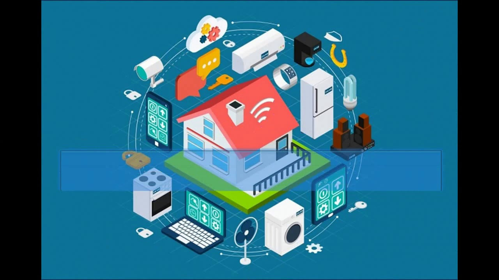

Hoy en día, la tecnología está presente en casi todos los aspectos de nuestra vida cotidiana. Desde que despertamos con una alarma en el celular hasta que nos dormimos viendo una serie en streaming, la interacción con dispositivos digitales es constante. Esto ha cambiado nuestros hábitos, nuestra forma de comunicarnos y hasta de organizarnos.
Las aplicaciones móviles nos permiten pedir comida, hacer compras, pagar servicios y mantenernos informados. Los asistentes virtuales como Siri, Alexa o Google Assistant han hecho que tareas como programar una alarma o encender la luz sean más simples que nunca.
En el hogar, los electrodomésticos inteligentes y los sistemas de automatización permiten controlar luces, temperatura o seguridad desde una app. En la salud, los relojes inteligentes monitorean nuestros pasos, ritmo cardíaco y calidad del sueño. Incluso hay refrigeradores que avisan si falta comida.
Aunque todo esto ha facilitado la vida, también es importante hacer un uso consciente de la tecnología. El tiempo frente a pantallas, la dependencia de ciertos dispositivos o la pérdida de privacidad son aspectos a considerar. Usada con responsabilidad, la tecnología es una aliada poderosa para mejorar nuestra calidad de vida.
